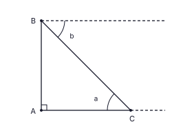
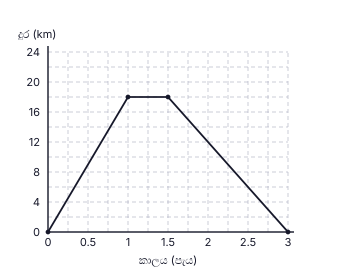
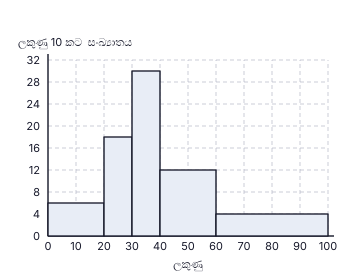
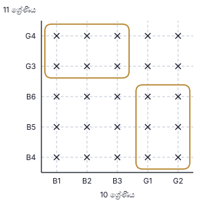

සටහන (ගුරුවරුන් සඳහා):
- A කොටස: එක් ප්රශ්නයකට ලකුණු 2 (නිවැරදි ක්රමයට ලකුණු 1, නිවැරදි අවසාන පිළිතුරට ලකුණු 1). මුළු ලකුණු 50.
- B කොටස: එක් ප්රශ්නයකට ලකුණු 10. මුළු ලකුණු 50. සෑම පියවරකටම හිමි ලකුණු දකුණු තීරුවේ දක්වා ඇත.
- නිවැරදි විකල්ප ක්රමවලට සම්පූර්ණ ලකුණු ලබා දෙන්න. ප්රස්තාර සහ රූපවලින් කියවන අගයන් සඳහා සාධාරණ පරාසයක් පිළිගන්න.
A කොටස — පිළිතුරු
1. මුළු වැඩ ප්රමාණය = 12 × 15 = කම්කරු-දින 180. දින 9 කට අවශ්ය කම්කරුවන් = 180 ÷ 9 = 20. අමතර කම්කරුවන් = 20 − 12.
අවසාන පිළිතුර: කම්කරුවන් 8 දෙනෙකි
(ලකුණු 2)2. E හරින් AB (සහ CD) ට සමාන්තර රේඛාවක් අඳින්න. එවිට AÊC = BÂE + ECD (ඒකාන්තර කෝණ) නිසා BÂE = 105° − 42°.
අවසාන පිළිතුර: BÂE = 63°
(ලකුණු 2)3. 3×3 + 5×2 − 1×412x = 9 + 10 − 412x = 1512x
අවසාන පිළිතුර: 54x
(ලකුණු 2)4. සෘජු ප්රිස්මයක පාර්ශ්වික මුහුණත් සෘජුකෝණාස්ර වේ; එබැවින් සමචතුරස්රයක් නොවන රොම්බසයක් මුහුණතක් විය නොහැක. (පාර්ශ්වික දාරය පාද දාරයකට සමාන නම් සමචතුරස්රයක් විය හැක.)
අවසාන පිළිතුර: (ii) ට ✓
(ලකුණු 2)5. අංශක 1 කට සිසුන් = 12 ÷ 40 = 0.3. ක්රිකට්: 150° × 0.3 = 45. (හෝ 12 × 150/40)
අවසාන පිළිතුර: සිසුන් 45 දෙනෙකි
(ලකුණු 2)6. DC යනු කේන්ද්රය සහ AB හි මධ්ය ලක්ෂ්යය හරහා යන රේඛාවයි; එබැවින් DC ⊥ AB සහ DA = DB. ADBE වෘත්ත චතුරස්රයක් නිසා AD̂B = 180° − 110° = 70°. DC මගින් AD̂B සමච්ඡේදනය වන නිසා CD̂B = 70° ÷ 2.
අවසාන පිළිතුර: 35°
(ලකුණු 2)7. 3(x2 − 25) = 3(x − 5)(x + 5)
අවසාන පිළිතුර: 3(x − 5)(x + 5)
(ලකුණු 2)8. lg 50 = lg (5 × 10) = lg 5 + lg 10 = 0.6990 + 1
අවසාන පිළිතුර: 1.6990
(ලකුණු 2)9. C හි ආරෝහණ කෝණය a = ACB. B හි අවරෝහණ කෝණය b = B හරහා තිරස් රේඛාව සහ BC අතර කෝණය. තිරස් රේඛා සමාන්තර නිසා මේවා ඒකාන්තර කෝණ වේ. රූපය බලන්න.

අවසාන පිළිතුර: a = b
(ලකුණු 2)10. වක්ර පෘෂ්ඨය : පාදය = 2πr(4r) : πr2 = 8πr2 : πr2
අවසාන පිළිතුර: 8 : 1
(ලකුණු 2)11. සම්පූර්ණ ප්රතිඵල = 4 × 4 = 16. එකතුව 12: (4, 8), (6, 6), (8, 4) → ප්රතිඵල 3 යි.
අවසාන පිළිතුර: 316
(ලකුණු 2)12. DB = DC නිසා DB̂C = DĈB = (180° − 40°) ÷ 2 = 70°. AB̂D = 180° − 70° = 110°. AB = BD නිසා x = (180° − 110°) ÷ 2.
අවසාන පිළිතුර: x = 35°
(ලකුණු 2)13. A = {1, 2, 3, 4, 6}, B = {2, 4, 6, 8, 10}. A ∩ B = {2, 4, 6} නිසා (i) අසත්යයි; A ∪ B = {1, 2, 3, 4, 6, 8, 10} නිසා (ii) සත්යයි; A′ = {5, 7, 8, 9, 10}, n(A′) = 5 නිසා (iii) අසත්යයි.
අවසාන පිළිතුර: (ii) ට ✓
(ලකුණු 2)14. 30x4y510x2y2
අවසාන පිළිතුර: 3x2y3
(ලකුණු 2)15. පොදු අනුපාතය r = 6 ÷ (−12) = −12. පස්වන පදය = 6 × r2 = 6 × 14
අවසාන පිළිතුර: 32 (1.5)
(ලකුණු 2)16. BÂC = BD̂C = 29° (එකම ඛණ්ඩයේ කෝණ). එබැවින් AD̂C = 2 × 29° = 58°. CB̂E = AD̂C (වෘත්ත චතුරස්රයක බාහිර කෝණය = අභ්යන්තර සම්මුඛ කෝණය).
අවසාන පිළිතුර: 58°
(ලකුණු 2)17. 24, 36, 60 හි මහා පො.සා. = 12; p හි කුඩාම බලය p2; q හි කුඩාම බලය q.
අවසාන පිළිතුර: 12p2q
(ලකුණු 2)18. ප්රිස්මයේ පරිමාව = 154 × h = πr2h ⇒ r2 = 154 × 722 = 49
අවසාන පිළිතුර: r = 7 cm
(ලකුණු 2)19. D, E මධ්ය ලක්ෂ්ය නිසා BD = AD = 3 සහ EC = AE = 5. ADE සෘජුකෝණී ත්රිකෝණයේ DE = √(52 − 32) = 4. මධ්ය ලක්ෂ්ය ප්රමේයයෙන් BC = 2 × DE = 8. පරිමිතිය = BD + DE + EC + CB = 3 + 4 + 5 + 8.
අවසාන පිළිතුර: 20 cm
(ලකුණු 2)20. අනුක්රමණය = (5 − 3) ÷ (6 − 2) = 12. y − 3 = 12(x − 2)
අවසාන පිළිතුර: y = 12x + 2 (හෝ x − 2y + 4 = 0)
(ලකුණු 2)21. සමාන්තරාස්රයක සම්මුඛ කෝණ සමාන නිසා DÂB = BĈD = 70°. ADEB වෘත්ත චතුරස්රයක් නිසා DÊB = 180° − 70°.
අවසාන පිළිතුර: 110°
(ලකුණු 2)22. P × (1.05)2 = 22 050, P × 1.1025 = 22 050, P = 22 050 ÷ 1.1025
අවසාන පිළිතුර: රු. 20 000
(ලකුණු 2)23. CB = CD (අරයන්) නිසා CB̂D = CD̂B = 70°. AC ∥ BD නිසා AĈB = CB̂D = 70° (ඒකාන්තර කෝණ). කේන්ද්රයේ කෝණය AĈB = 70° නිසා AÊB = 70° ÷ 2.
අවසාන පිළිතුර: 35°
(ලකුණු 2)24. 4x + 15 > 3 ⇒ 4x > −12 ⇒ x > −3
අවසාන පිළිතුර: x > −3; ඍණ නිබිල: −2, −1
(ලකුණු 2)25. BÂC හි සමච්ඡේදකය (P සහ Q වලින් වාප සම්පූර්ණ කර, ඒවායේ ඡේදන ලක්ෂ්යය A ට යා කර දික් කරන්න); B හිදී AB ට ලම්බකය (B දෙපස AB මත වාප කපා, ඉහළින් වාප දෙකක් අඳින්න); ඒවා හමුවන ලක්ෂ්යය O. රූපය බලන්න.
 ඉදිකිරීම සම්පූර්ණ කළ ආකාරය (කුඩා කර දක්වා ඇත). වෘත්තය ඇඳ තිබීම අනිවාර්ය නොවේ.
ඉදිකිරීම සම්පූර්ණ කළ ආකාරය (කුඩා කර දක්වා ඇත). වෘත්තය ඇඳ තිබීම අනිවාර්ය නොවේ.අවසාන පිළිතුර: O = ඡේදන ලක්ෂ්යය (O සිට AC ට ලම්බක දුර = OB)
(ලකුණු 2)B කොටස — පිළිතුරු
ප්රශ්නය 1
| (i) |
| ආහාරවලින් පසු ඉතිරි භාගය = 1 − 15 = 45 | 1 |
| (ii) |
| අනෙකුත් වියදම් = 58 × 45 = ලැබුණු මුදලෙන් 12 | 1 |
| ඉතිරිය = 45 − 12 = 310 | 1 |
| (iii) |
| ලැබුණු මුදලෙන් 310 = රු. 36 000, එබැවින් ලැබුණු මුදල = 36 000 × 103 = රු. 120 000 | 1 |
| ආහාර = 15 × 120 000 = රු. 24 000; අනෙකුත් වියදම් = 12 × 120 000 = රු. 60 000 | 1 |
| (iv) |
| වැටුප රු. S යැයි ගනිමු. බද්ද = 10100 × (S − 75 000). S − 0.1(S − 75 000) = 120 000 | 1 |
| 0.9S + 7 500 = 120 000, එබැවින් 0.9S = 112 500 | 1 |
| S = රු. 125 000 (පරීක්ෂාව: බද්ද = 50 000 න් 10% = 5 000; 125 000 − 5 000 = 120 000) | 1 |
| (v) |
| 24000125000 × 100 | 1 |
| = 19.2% | 1 |
මුළු ලකුණු: 10
ප්රශ්නය 2
| (a)(i) |
 නිවැරදි ප්රස්තාරය (කුඩා කර දක්වා ඇත) |
| (1, 18) සිට (1.5, 18) දක්වා තිරස් රේඛාව (මිනිත්තු 30 ක නැවතුම) | 1 |
| (3, 0) ලක්ෂ්යය නිවැරදිව පිහිටුවීම (ආපසු ගමන පැය 1½ ක් නිසා පැය 3 දී නිවසට පැමිණේ) | 1 |
| (1.5, 18) සිට (3, 0) දක්වා සරල රේඛාව | 1 |
| (a)(ii) |
| වේගය = දුර ÷ කාලය = 18 ÷ 1.5 | 1 |
| = 12 km h−1 | 1 |
| (b)(i) |
| AEB වාපය = 12 × 2 × 227 × 7 = 22 cm | 1 |
| පරිමිතිය = 22 + 33 + 14 + 33 = 102 cm | 1 |
| (b)(ii) |
| අර්ධ වෘත්තයේ වර්ගඵලය = 12 × 227 × 7 × 7 = 77 cm2 | 1 |
| සෘජුකෝණාස්රයේ වර්ගඵලය = 14 × 33 = 462 cm2 | 1 |
| 462 ÷ 77 = ගුණ 6 යි | 1 |
මුළු ලකුණු: 10
ප්රශ්නය 3
| (i) |
| වරිපනම් බද්ද = 10100 × 50 000 | 1 |
| = රු. 5 000 | 1 |
| (ii) |
| වසරේ කුලිය = 12 500 × 12 = රු. 150 000; නඩත්තු වියදම = 150 000 න් 10% = රු. 15 000 | 1 |
| ඉතිරි මුදල = 150 000 − 5 000 − 15 000 = රු. 130 000 | 1 |
| (iii)(a) |
| කොටසක ලාභාංශය = 7.5100 × 80 = රු. 6 | 1 |
| කොටස් ගණන = 15 000 ÷ 6 | 1 |
| = කොටස් 2 500 යි | 1 |
| (iii)(b) |
| ආයෝජනය කළ මුළු මුදල = 2 500 × 80 = රු. 200 000 | 1 |
| එකතු කළ අමතර මුදල = 200 000 − 130 000 = රු. 70 000 | 1 |
| ප්රතිශතය = 70000200000 × 100 = 35% | 1 |
මුළු ලකුණු: 10
ප්රශ්නය 4
| (i) |
| බහුඅස්රයෙන් කියවන අගයන්: 20 – 30 → 18; 30 – 40 → 30; 40 – 60 → 24; 60 – 100 → 16 (හතරම නිවැරදි 3; තුන නිවැරදි 2; දෙක නිවැරදි 1) | 3 |
| (ii) |
| උස (ලකුණු 10 කට සංඛ්යාතය): 20 – 30: 18 ÷ 10 × 10 = 18; 30 – 40: 30; 40 – 60: 24 ÷ 20 × 10 = 12; 60 – 100: 16 ÷ 40 × 10 = 4 (පළමු තීරය: 12 ÷ 20 × 10 = 6, දී ඇත) | 1 |
 නිවැරදි ජාල රේඛය (කුඩා කර දක්වා ඇත) |
| 20 – 30 සහ 30 – 40 තීර 18 සහ 30 උසින් ඇඳීම | 1 |
| 40 – 60 සහ 60 – 100 තීර 12 සහ 4 උසින් ඇඳීම; තීරවල පළල නිවැරදි වීම සහ තීර අතර හිඩැස් නොමැති වීම | 1 |
| (iii) |
| සමුච්චිත සංඛ්යාත: 12, 30, 60, 84, 100 (12 + 18 = 30; 30 + 30 = 60; 60 + 24 = 84; 84 + 16 = 100) (හතරම නිවැරදි 2; දෙක හෝ තුන නිවැරදි 1) | 2 |
| (iv) |
| ලකුණු 40 හෝ ඊට වැඩි සිසුන් = 24 + 16 = 40 (හෝ 100 − 60) | 1 |
| සම්භාවිතාව = 40100 = 25 | 1 |
මුළු ලකුණු: 10
ප්රශ්නය 5
| (i) |
 නියැදි අවකාශය සහ වට කළ ප්රතිඵල (කුඩා කර දක්වා ඇත) |
| දැල්හි ඡේදන ලක්ෂ්ය 25 ම (තීරු 5 × පේළි 5) ‘×’ මගින් ලකුණු කිරීම (නිවැරදි 24-25: 2; අවම 13: 1) | 2 |
| (ii) |
| (B1, B2, B3) × (G3, G4) ප්රතිඵල 6 ද (G1, G2) × (B4, B5, B6) ප්රතිඵල 6 ද වට කරන සංවෘත වක්ර; ප්රතිඵල 12 ක් | 2 |
| P(හරියටම පිරිමි එක් අයෙකු) = 1225 | 1 |
| (iii) |
| පළමු ශාඛා: 1225 (හරියටම එක් පිරිමි) සහ 1325 (පිරිමි දෙදෙනා: 9, ගැහැණු දෙදෙනා: 4, එබැවින් ප්රතිඵල 13 ක්) | 1 |
| ‘හරියටම එක් පිරිමි’ ට පසු: ජය 35, ජය නැත 25 | 1 |
| ‘පිරිමි දෙදෙනා හෝ ගැහැණු දෙදෙනා’ ට පසු: ජය 25, ජය නැත 35 | 1 |
| (iv) |
| P(ජය නොගැනීම) = 1225 × 25 + 1325 × 35 = 24125 + 39125 | 1 |
| = 63125 | 1 |
මුළු ලකුණු: 10